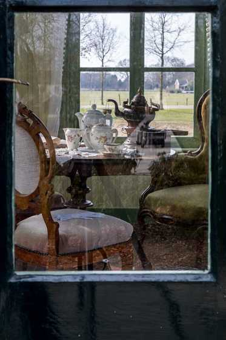
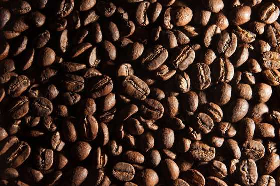
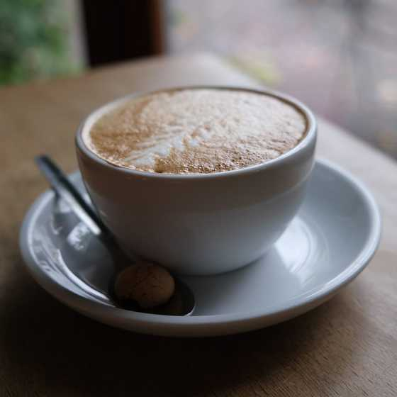
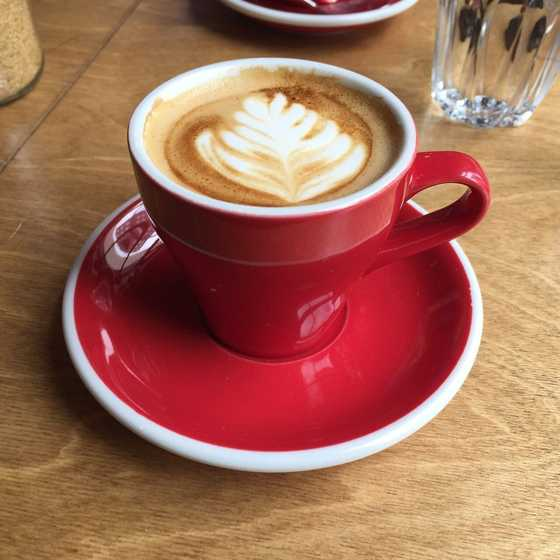
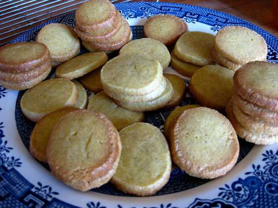
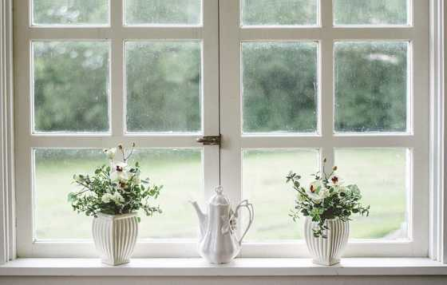
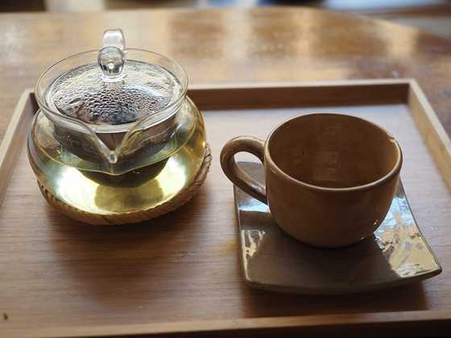

山口市・後河原 / COFFEE
川のほとりで、
ひと息の一杯を。
桜の季節も、蛍の季節も。一の坂川沿いの小さなカフェで、ゆっくりコーヒーを。
ABOUT
一の坂川沿いの、小さなカフェ
InstagramのプロフィールによるとGODMARIE COFFEEは、山口市の一の坂川沿いにある小さなカフェです。春は川沿いの桜がきれいで、初夏には蛍が舞う場所だと紹介されています。
このページは、その川辺の景色を手がかりに、桜のうす桃色と蛍のやわらかな黄緑、川の深い緑を配色にしています。
情報源: Instagram @godmarie_coffee
店名の意味や由来、オーナーの想いは確認できていないため記載していません。上記以外の文章や見出しの言い回しは制作側のイメージです。
MENU
コーヒーと、お菓子と
お店のメニューは確認できていません。下の写真はコーヒーやお菓子の雰囲気を伝えるフリー素材のイメージで、実際の提供内容ではありません。










| メニュー・価格 | 準備中 |
|---|---|
| 営業時間 | 準備中 |
| 定休日 | 準備中 |
営業日はInstagramの営業日カレンダー(ハイライト)で案内されているようです。最新情報はInstagramをご確認ください。
VOICE
口コミ(イメージ例)
イメージ例
川沿いを歩いていて見つけたお店。窓から見える景色を眺めながら、ゆっくりコーヒーをいただきました。
イメージ例 / 散歩の途中にイメージ例
春の桜の頃に訪ねたくなる、静かで落ち着く雰囲気。香りのよい一杯でほっとしました。
イメージ例 / 春に訪れた方イメージ例
こぢんまりとしていて、ひとりでも気兼ねなく過ごせました。また季節を変えて行きたいです。
イメージ例 / ひとりで訪れた方口コミは制作側が作ったイメージ例であり、実在のお客様の声ではありません。